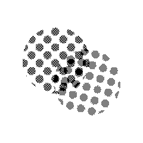

OPERATIONAL
A risograph visualization and layout tool: arrange photos across two ink layers and preview how the print will come out.

Risographer is a layout and preview tool for risograph printing. Set up a Letter, A3 or custom sheet, drop photos into one of two ink layers (blue and pink by default), then move, rotate and arrange them while seeing how the finished print will look.
The preview behaves like the real process. The halftone screen is anchored to the page, not to each image, because on a riso the screen belongs to the plate. Images slide through a fixed dot grid as you arrange them, two images on the same ink share one continuous screen, and the two inks multiply where they overlap. Each ink has its own screen angle and offset, dot pitch is set in lines per inch, and an ink limit keeps solids within what a riso can actually print.
It is one HTML file. No install, no account, nothing uploaded.
Follow me on X for updates! New builds, releases and works in progress get posted there first.